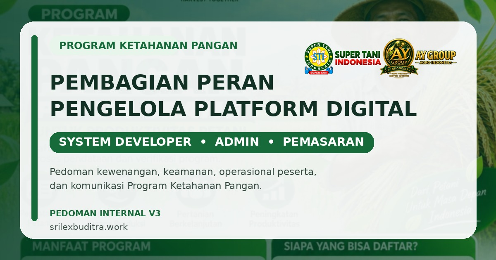

IT & SYSTEM
System Developer
Pengembangan, keamanan sistem, akun & hak akses, konfigurasi teknis, audit, database/API, dan pemeliharaan dashboard.
Pedoman resmi pembagian kewenangan, keamanan sistem, operasional peserta, dan komunikasi pada Platform Digital Program Ketahanan Pangan.

Setiap peran memiliki kewenangan berbeda agar pengelolaan platform tetap aman, tertib, dan mudah diaudit.
Pengembangan, keamanan sistem, akun & hak akses, konfigurasi teknis, audit, database/API, dan pemeliharaan dashboard.
Pengelolaan data peserta, verifikasi, revisi, anti-duplikasi, dokumen, kartu/sertifikat, dan kebutuhan operasional program.
Komunikasi program, pemetaan wilayah dan komoditas, statistik, serta laporan pemasaran tanpa akses ke data sensitif peserta.
Role pada dashboard merupakan pembagian kewenangan di dalam platform digital dan bukan penetapan struktur jabatan organisasi.